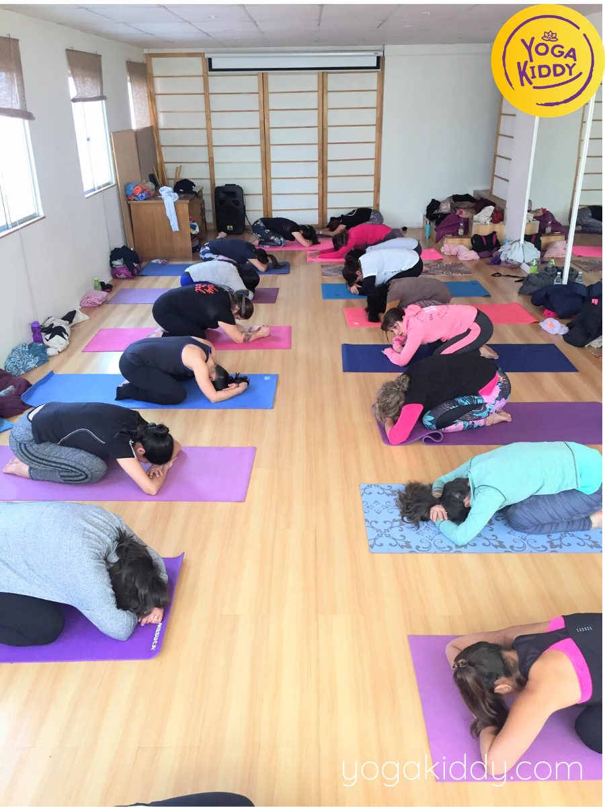
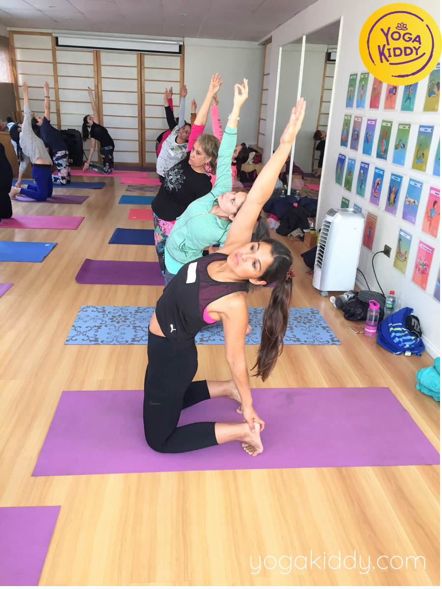
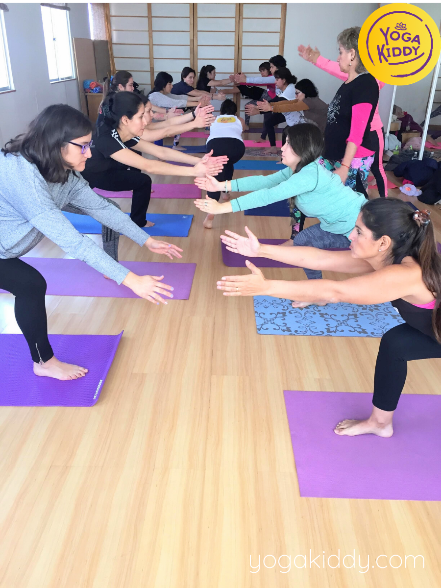
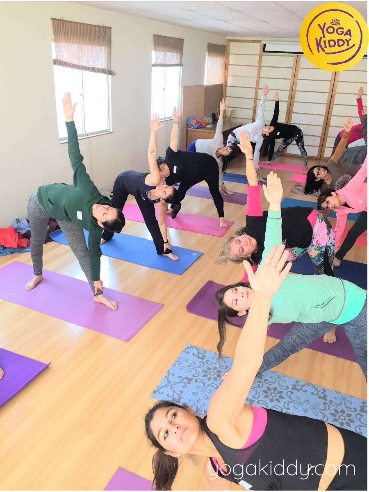
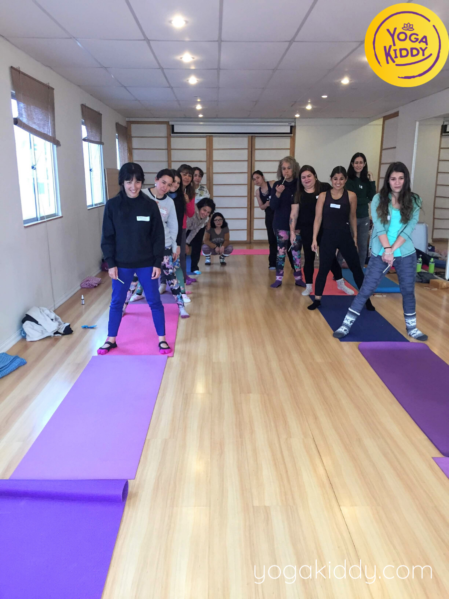
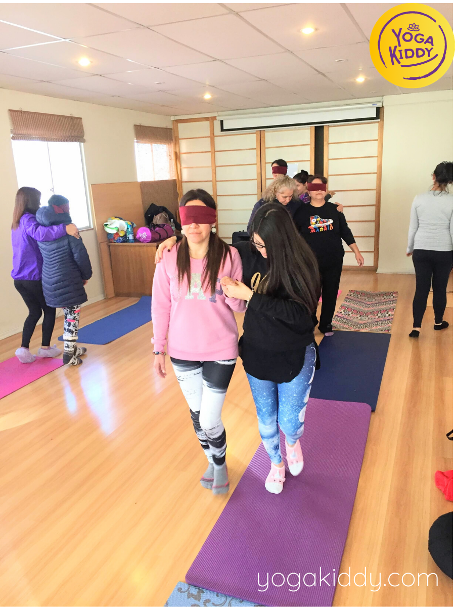
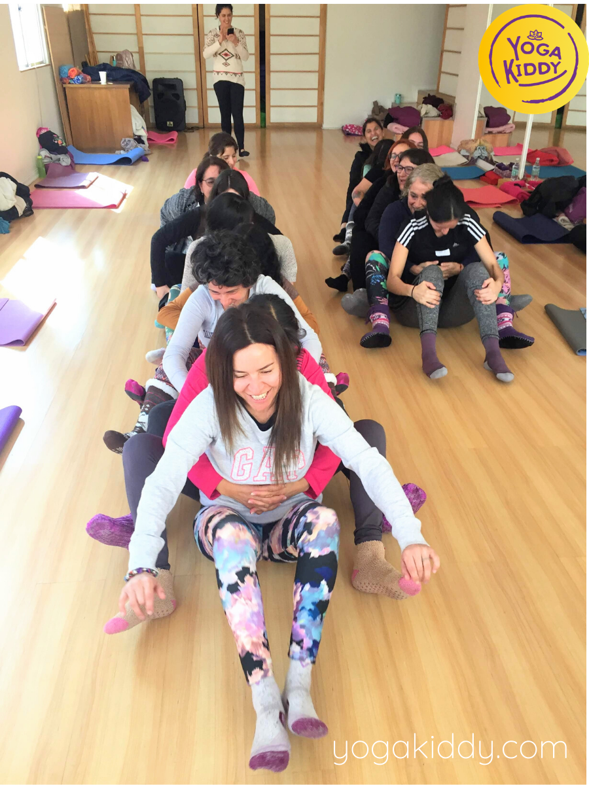
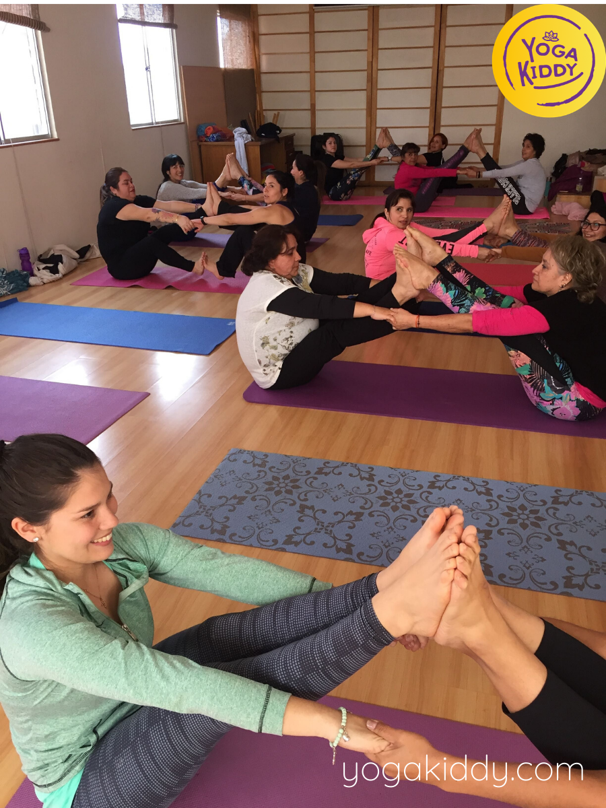
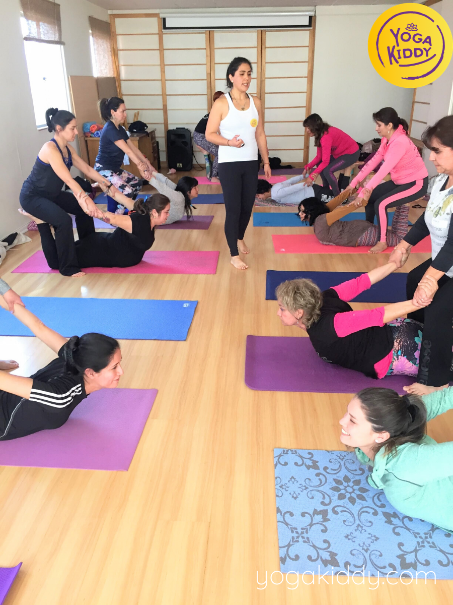
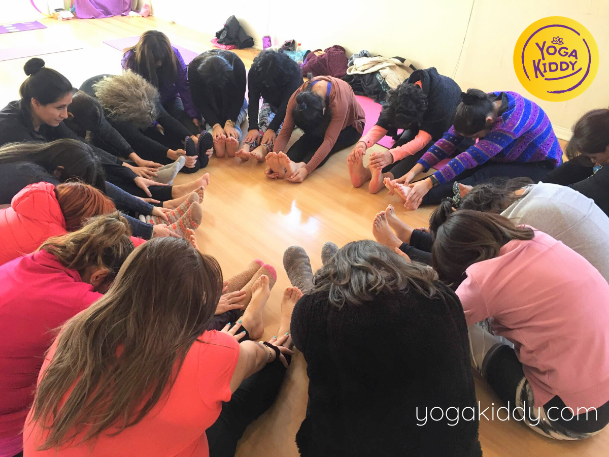

En Agosto de 2019 visitamos nuevamente Antofagasta y nos encontramos con un grupo hermoso de mujeres que estaban dispuestas a aprovechar estos dos días con toda su energía a nuestra disposición para trabajar en conjunto y poder crecer a la par. 💜
Agradecemos infinitamente a este hermoso grupo de mujeres, por habernos entregado tanto y por unirse a la gran familia YogaKiddy en estos días de profunda transformación y reflexión 🙏💖😘










Me voy con el corazón llenito. Se nota que son personas super preparadas con un tremendo corazón. Hicieron que el grupo se uniera mucho, aprendí mucho. Así es que es un curso totalmente completo, de verdad que le tenía mucha fe y estaba muy esperanzada pero me voy aún más.. Superó todo lo que esperaba, se lo recomiendo a todas las demás. Les cuento que tengo un hijo con TDA y se que muchas de las cosas que nos enseñaron aca voy a poder aplicarlas con él. Así que si son aplicables para él es aplicable para todos los pequeños. Les va a encantar!
Yo llegué aquí por redes sociales y lo recomiendo porque personalmente solamente tenía informaciones básicas. No practicaba yoga y tenía información como cualquier persona y me di cuenta que no tenía requisitos para empezar este taller y ha sido maravilloso. Da la posibilidad de despertar ciertas cosas físicas, emocionales; sobretodo emocionales que tú no te das cuenta que están ahí y siento que es una herramienta bastante importante para nuestros niños, sobre todo para quienes trabajamos con niños.